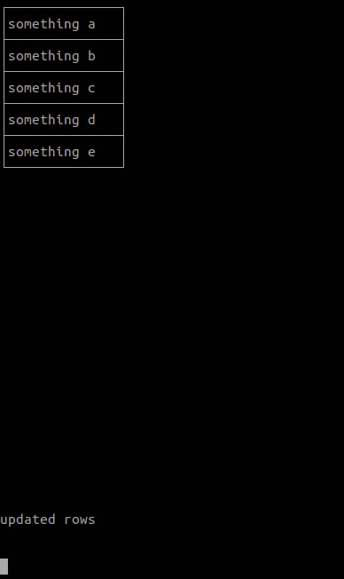
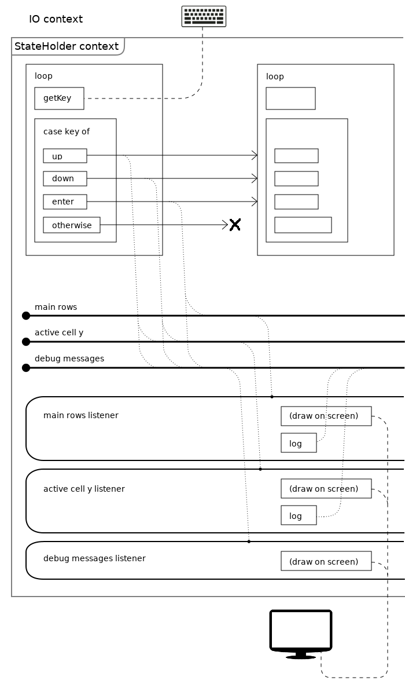
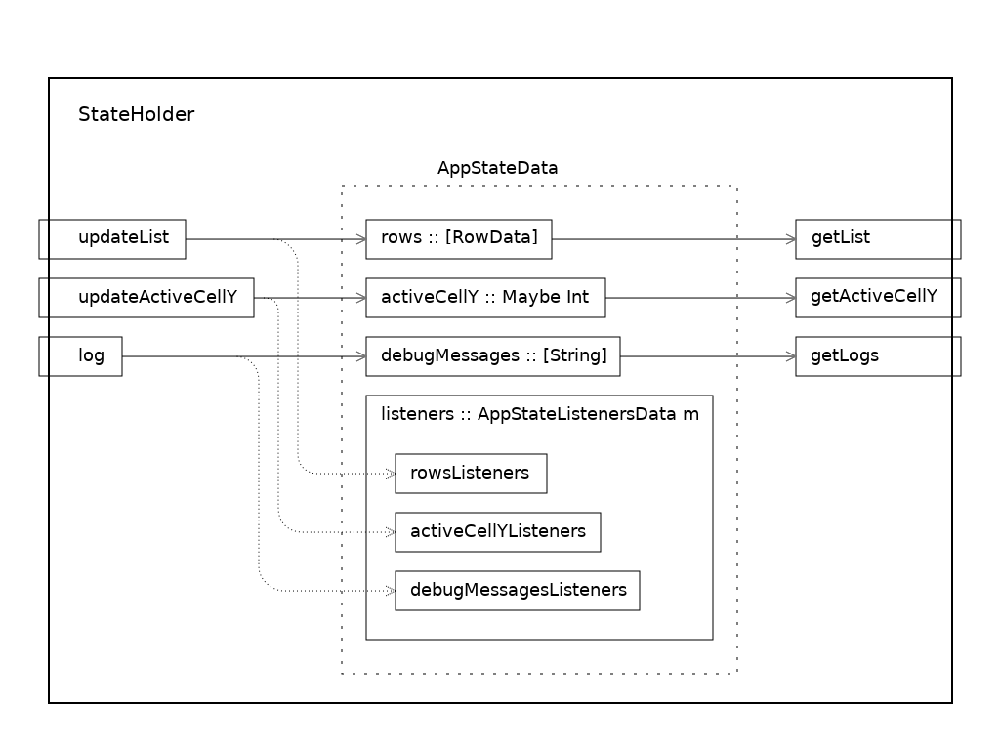
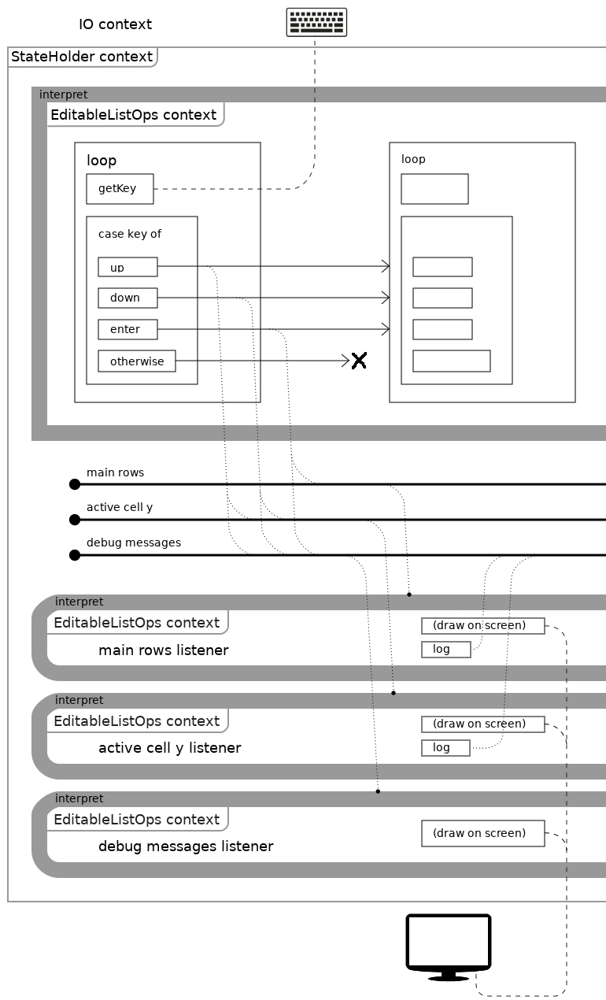
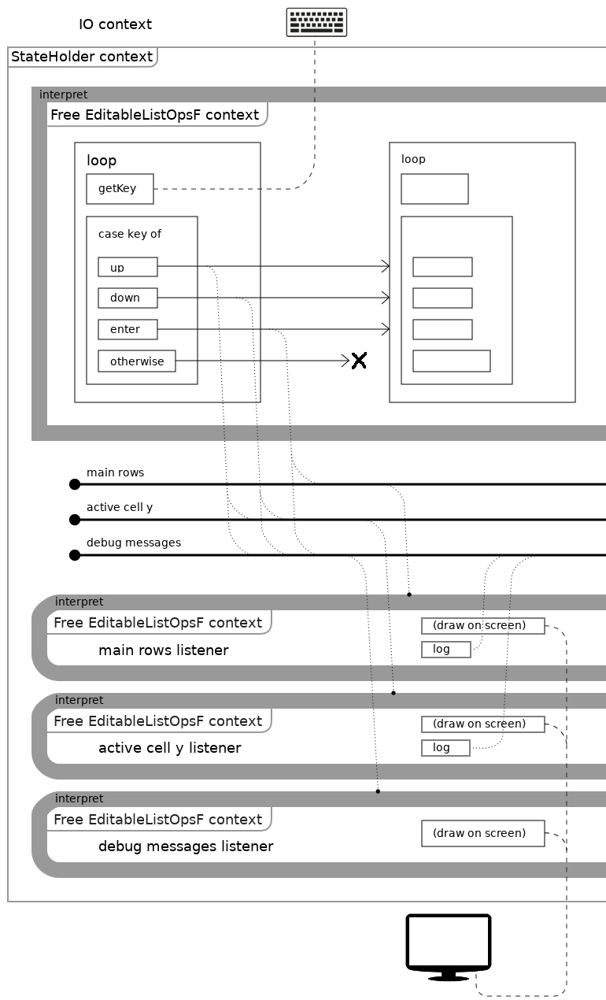

Creating Custom Monads in Haskell: Console List GUI

In the previous post I described several architectures of console strings list application.
One of the options is creating a custom monad, which will work as a context for running effects and listeners in.
There are various approaches we can follow when creating custom monads, there are three styles: final, initial and operational.
If you apply some improvements to initial style - you'll get free monads.
Likewise, if you apply some improvements to operational style - you'll get freer monads.
We have five variations of how to create a monad.
If we look at monad styles from the perspective of comparing them with OOP design patterns:
- final style resembles interfaces and implementations.
- initial and operational styles resemble the interpreter pattern.
- constructing descriptions of actions in operational style resembles the composite pattern.
~~~~~~~~~~~~~~~~~~~~~~~~~~~~~~~~~~~~~~~~~~~~~~~~~~~~~~~~~~~~~~~~~~~~
Final style

Let's recall what we started with: we had primitive proto-listeners that we needed to invoke manually. They worked in IO-context, and the data types representing application state looked like this:
data AppStateData = AppState { rows :: [RowData] , activeCellY :: Maybe Int , debugMessages :: [String] , listeners :: AppStateListenersData } data AppStateListenersData = AppStateListeners { rowsListeners :: [[RowData] -> IO ()] , activeCellYListeners :: [Maybe Int -> IO ()] , debugMessagesListeners :: [[String] -> IO ()] }
In the previous approach a list observer had a type [RowData] -> IO (), now it's going to have a type (Monad m, EditableListApp m) => [RowData] -> m (), it means that previously we invoked our listeners directly in IO monad, but now we're going to invoke them in the context of some abstract monad with the EditableListApp interface.
Data types that hold the state and listeners look like this. They are parameterized by the type of the monad that we're going to use as a context for running listeners.
data AppStateData m = AppState { rows :: [RowData] , activeCellY :: Maybe Int , debugMessages :: [String] , listeners :: AppStateListenersData m } data AppStateListenersData m = AppStateListeners { rowsListeners :: [[RowData] -> m ()] , activeCellYListeners :: [Maybe Int -> m ()] , debugMessagesListeners :: [[String] -> m ()] }
Helper functions that add listeners:
addRowsListener :: (Monad m, EditableListApp m) => ([RowData] -> m ()) -> AppStateListenersData m -> AppStateListenersData m addActiveCellYListener :: (Monad m, EditableListApp m) => (Maybe Int -> m ()) -> AppStateListenersData m -> AppStateListenersData m addDebugMessagesListener :: (Monad m, EditableListApp m) => ([String] -> m ()) -> AppStateListenersData m -> AppStateListenersData m
These functions declare that the m type should be a monad and should be an instance of EditableListApp typeclass. That's our custom monad.
You might wonder why we didn't add (Monad m, EditableListApp m) constraints to the AppStateData and AppStateListenersData data types and not just to functions that add listeners. The answer is I don't know how to do that, and since the code works without those constraints I'm not sure whether we should do that at all.
Creating a custom monad is like creating a new sub-language inside a language.
In order to create a language we need a syntax and semantics.
Syntax is a structure of our instructions.
Semantics is how we interpret that structure.
To put it more bluntly, we need to define words of our new language and a dictionary to translate to other languages.
(It means that we have a lexicon and syntax on one side, and semantics, or interpretation, on the other side)
On the other hand, it looks like a good old story about an interface and an implementation, so familiar to us from OOP.
We define a typeclass that declares monad's functions (new words of our new language):
class EditableListApp m where getList :: m [RowData] getActiveCellY :: m (Maybe Int) getLogs :: m [String] updateList :: [RowData] -> m () updateActiveCellY :: Maybe Int -> m () log :: String -> m ()
What do the signatures of the functions we just listed mean?
Operations that return results, return results in the context of m monad:
getList :: m [RowData] getActiveCellY :: m (Maybe Int) getLogs :: m [String]
Operations that perform effects, perform those effects in the context of m monad:
updateList :: [RowData] -> m () updateActiveCellY :: Maybe Int -> m () log :: String -> m ()
Interpretation

We need another language to translate our words to. Here it is: the IO monad wrapped (or transformed) with StateT monad transformer. We're going to interpret actions from the custom monad to this monad:
newtype StateHolder a = StateHolder (StateT (AppStateData StateHolder) IO a) deriving (Functor, Applicative, Monad, MonadIO)
The interpretation (looks more like a definition of words) is declared as an instance of a typeclass:
instance EditableListApp StateHolder where getList = StateHolder $ rows <$> get getActiveCellY = StateHolder $ activeCellY <$> get getLogs = StateHolder $ debugMessages <$> get updateList l = do StateHolder $ modify $ \s -> s { rows = l } reacts <- StateHolder $ (rowsListeners . listeners) <$> get forM_ reacts ($ l) -- same as forM_ reacts $ \react -> react l updateActiveCellY y = do StateHolder $ modify $ \s -> s { activeCellY = y } s <- StateHolder $ get let reacts = activeCellYListeners (listeners s) forM_ reacts ($ y) -- same as forM_ reacts $ \react -> react y log msg = do StateHolder $ modify $ \s -> s { debugMessages = take debugLinesCount (msg:(debugMessages s)) } logs <- StateHolder $ debugMessages <$> get reacts <- StateHolder $ (debugMessagesListeners . listeners) <$> get forM_ reacts ($ logs) -- same as forM_ reacts $ \react -> react logs
From the OOP perspective this design resembles an interface and an implementation, from our linguistic analogy perspective it looks like a dictionary or an interpreter that helps us translate (interpret) operations from the language of one monad (let's call it a descriptive monad) to the language of another monad (let's call it a target monad).
The performStateAction function translates the actions further to the IO monads language. We can imagine that it takes actions described in StateT monad's context and invokes them in the IO monad's context (actually, it doesn't really invoke them in IO-context, but merely translates them to IO-context, although I'm not sure about whether it invokes them or not. See my question about the perform-recursive-monadic-loop example):
performStateAction :: AppStateData StateHolder -> StateHolder a -> IO () performStateAction state (StateHolder action) = do runStateT action state return ()
The main function clears the screen, creates an initial state (and listeners), invokes, wrapping with performStateAction function call, the initRows and the loop function:
main :: IO () main = do hSetBuffering stdin NoBuffering hSetBuffering stdout NoBuffering hSetEcho stdin False clearScreen performStateAction initialState $ do initRows loop where ...
There is one thing in the performStateAction function's behavior that is not clear to me: seems like it doesn't wait for the loop function to return from recursion and runs the runStateT function on it's result, which shouldn't be ready yet because we're still in the recursion. How does that work?
I've isolated a minimalistic example of this behavior in this project: perform-recursive-monadic-loop (https://github.com/shiraeeshi/hs-perform-recursive-monadic-loop).
----------------------------------
- creating an initial state
initialState :: AppStateData StateHolder initialState = AppState [] Nothing [] initListeners
----------------------------------
- creating listeners:
initListeners :: AppStateListenersData StateHolder -- initListeners = -- addRowsListener mainRowsListener -- (addActiveCellYListener activeCellYListener -- (addDebugMessagesListener debugMessagesListener -- (empty))) initListeners = addRowsListener mainRowsListener $ addActiveCellYListener activeCellYListener $ addDebugMessagesListener debugMessagesListener $ empty where empty = AppStateListeners [] [] [] mainRowsListener :: [RowData] -> StateHolder () mainRowsListener rows = do activeCellCoords <- fmap (\y -> (0, y)) <$> getActiveCellY liftIO $ showInGrid xUpperLeft yUpperLeft columnCount columnWidth activeCellCoords (map (\row -> [smth row]) rows) log "updated rows" activeCellYListener :: Maybe Int -> StateHolder () activeCellYListener activeCellY = do let activeCellCoords = fmap (\y -> (0, y)) activeCellY liftIO $ drawGrid xUpperLeft yUpperLeft columnWidth columnCount rowCount case activeCellCoords of Nothing -> return () Just coordsPair -> do liftIO $ highlightCell xUpperLeft yUpperLeft columnWidth columnCount rowCount coordsPair log "highlighted cell" debugMessagesListener :: [String] -> StateHolder () debugMessagesListener debugMessages = do liftIO $ printFromBottom xUpperLeft (yUpperLeft+12+debugLinesCount) debugMessages
----------------------------------
- the strings list initialization:
initRows :: StateHolder () initRows = updateList initialRows
When initializing the list, we invoke updateList function, which in turn invokes its listeners.
----------------------------------
- the loop function:
The loop function doesn't take any parameters, because the state is passed implicitly through the context, the context here is StateHolder monad.
Since the loop function is defined in the StateHolder monad's context, not in IO context, we can't directly invoke IO actions from here, but we made StateHolder an instance of MonadIO, so we can invoke IO actions using liftIO function.
loop :: StateHolder () loop = do key <- liftIO $ getKey when (key /= "\ESC") $ do case key of "\ESC[A" -> do -- up activeCellY <- getActiveCellY let newActiveCellY = case activeCellY of Just y -> Just $ max 0 (y-1) Nothing -> Just 0 updateActiveCellY newActiveCellY log $ "up, " ++ show(newActiveCellY) loop
~~~~~~~~~~~~~~~~~~~~~~~~~~~~~~~~~~~~~~~~~~~~~~~~~~~~~~~~~~~~~~~~~~~~
Initial style

Linguistic parallels become even more obvious in initial and operational styles: interpretation becomes a step (a function call) in the execution flow. We can see interpretation as translating the description of action from the language of one monad (let's call it the descriptive monad) to the language of another monad (let's call it a target monad).
Data types that represent application state are the same types as in the final style.
data AppStateData m = AppState { rows :: [RowData] , activeCellY :: Maybe Int , debugMessages :: [String] , listeners :: AppStateListenersData m } data AppStateListenersData m = AppStateListeners { rowsListeners :: [[RowData] -> m ()] , activeCellYListeners :: [Maybe Int -> m ()] , debugMessagesListeners :: [[String] -> m ()] }
Helper functions that add listeners, now we only have to list one constraint (Monad m).
addRowsListener :: Monad m => ([RowData] -> m ()) -> AppStateListenersData m -> AppStateListenersData m addActiveCellYListener :: Monad m => (Maybe Int -> m ()) -> AppStateListenersData m -> AppStateListenersData m addDebugMessagesListener :: Monad m => ([String] -> m ()) -> AppStateListenersData m -> AppStateListenersData m
We create a monad in initial style like this:
- we declare monad's operations as ADT
- we make that ADT a monad
- for our convenience, we create smart-constructors for operations
Here is how to use a monad in initial style:
- we describe some actions in terms of the descriptive monad
- we declare some target monad
- we create an interpreter function that translates from descriptive monad to the target monad
Declaring monad's operations as ADT:
data EditableListOps a = GetList ([RowData] -> EditableListOps a) | GetActiveCellY ((Maybe Int) -> EditableListOps a) | GetLogs ([String] -> EditableListOps a) | UpdateList [RowData] (EditableListOps a) | UpdateActiveCellY (Maybe Int) (EditableListOps a) | Log String (EditableListOps a) | forall b. LiftIO (IO b) (b -> EditableListOps a) | Done a
Here is how to determine a type signature for a constructor:
- operations that return a result - for those operations we declare a continuation function that gets that result as a parameter:
GetList ([RowData] -> EditableListOps a) | GetActiveCellY ((Maybe Int) -> EditableListOps a) | GetLogs ([String] -> EditableListOps a)
- operations that don't return a result, because we're interested in their side-effects, not in the results. For those operations we declare a field with a type EditableListOps a. That field is equivalent to a continuation that takes an empty result as a parameter like this: () -> EditableListOps a.
| UpdateList [RowData] (EditableListOps a) | UpdateActiveCellY (Maybe Int) (EditableListOps a) | Log String (EditableListOps a)
Making an ADT a monad (these functions build a new continuation that call the old continuation and recursively call the same function):
instance Functor EditableListOps where fmap f (GetList k) = GetList $ \lst -> fmap f (k lst) fmap f (GetActiveCellY k) = GetActiveCellY $ \maybeInt -> fmap f (k maybeInt) fmap f (GetLogs k) = GetLogs $ \logs -> fmap f (k logs) fmap f (UpdateList lst op) = UpdateList lst (fmap f op) fmap f (UpdateActiveCellY y op) = UpdateActiveCellY y (fmap f op) fmap f (Log msg op) = Log msg (fmap f op) fmap f (LiftIO a op) = LiftIO a (\k -> fmap f (op k)) fmap f (Done a) = Done (f a) instance Applicative EditableListOps where pure = Done (GetList h) <*> g = GetList $ \lst -> (h lst) <*> g (GetActiveCellY h) <*> g = GetActiveCellY $ \y -> (h y) <*> g (GetLogs h) <*> g = GetLogs $ \logs -> (h logs) <*> g (UpdateList lst h) <*> g = UpdateList lst (h <*> g) (UpdateActiveCellY y h) <*> g = UpdateActiveCellY y (h <*> g) (Log msg h) <*> g = Log msg (h <*> g) (LiftIO a h) <*> g = LiftIO a (\k -> (h k) <*> g) (Done a) <*> g = fmap a g instance Monad EditableListOps where return = Done (GetList h) >>= f = GetList $ \lst -> (h lst) >>= f (GetActiveCellY h) >>= f = GetActiveCellY $ \y -> (h y) >>= f (GetLogs h) >>= f = GetLogs $ \logs -> (h logs) >>= f (UpdateList lst h) >>= f = UpdateList lst (h >>= f) (UpdateActiveCellY y h) >>= f = UpdateActiveCellY y (h >>= f) (Log msg h) >>= f = Log msg (h >>= f) (LiftIO a h) >>= f = LiftIO a (\k -> (h k) >>= f) (Done x) >>= f = f x
We need to make the desciptive monad an instance of MonadIO to be able to call IO-actions using liftIO.
instance MonadIO EditableListOps where -- liftIO a = LiftIO a $ \k -> return k liftIO a = LiftIO a return
Creating smart constructors for operations
getList :: EditableListOps [RowData] getList = GetList return getActiveCellY :: EditableListOps (Maybe Int) getActiveCellY = GetActiveCellY return getLogs :: EditableListOps [String] getLogs = GetLogs return updateList :: [RowData] -> EditableListOps () updateList l = UpdateList l $ return () updateActiveCellY :: (Maybe Int) -> EditableListOps () updateActiveCellY y = UpdateActiveCellY y $ return () log :: String -> EditableListOps () log msg = Log msg $ return ()
Declaring a target monad
newtype StateHolder a = StateHolder (StateT (AppStateData StateHolder) IO a) deriving (Functor, Applicative, Monad, MonadIO)
Creating an interpreter function that translates from descriptive monad to the target monad
interpret :: EditableListOps a -> StateHolder a interpret (Done x) = return x interpret (GetList k) = do lst <- rows <$> (StateHolder get) interpret (k lst) interpret (GetActiveCellY k) = do y <- activeCellY <$> (StateHolder get) interpret (k y) interpret (GetLogs k) = do logs <- debugMessages <$> (StateHolder get) interpret (k logs) interpret (UpdateList l k) = do StateHolder $ modify $ \s -> s { rows = l } reacts <- (rowsListeners . listeners) <$> (StateHolder get) forM_ reacts ($ l) -- forM_ reacts $ \react -> react l interpret k interpret (UpdateActiveCellY y k) = do StateHolder $ modify $ \s -> s { activeCellY = y } reacts <- (activeCellYListeners . listeners) <$> (StateHolder get) forM_ reacts ($ y) -- forM_ reacts $ \react -> react y interpret k interpret (Log msg k) = do StateHolder $ modify $ \s -> s { debugMessages = take debugLinesCount (msg:(debugMessages s)) } logs <- debugMessages <$> (StateHolder get) reacts <- (debugMessagesListeners . listeners) <$> (StateHolder get) forM_ reacts ($ logs) -- forM_ reacts $ \react -> react log interpret k interpret (LiftIO a k) = do v <- liftIO a interpret (k v)
The performStateAction function translates actions from target monad further to IO-monad. We can imagine that it executes those actions.
performStateAction :: AppStateData StateHolder -> StateHolder a -> IO () performStateAction state (StateHolder action) = do runStateT action state return ()
The main function clears the screen, creates an initial state (and listeners), invokes, wrapping with performStateAction function call, the initRows and the loop function:
main :: IO () main = do hSetBuffering stdin NoBuffering hSetBuffering stdout NoBuffering hSetEcho stdin False clearScreen -- performStateAction initialState (interpret (do ...)) performStateAction initialState $ interpret $ do initRows loop where ...
----------------------------------
- creating an initial state
initialState :: AppStateData StateHolder initialState = AppState [] Nothing [] initListeners
----------------------------------
- creating listeners:
initListeners :: AppStateListenersData StateHolder -- initListeners = -- addRowsListener (interpret . mainRowsListener) -- (addActiveCellYListener (interpret . activeCellYListener) -- (addDebugMessagesListener (interpret . debugMessagesListener) -- (empty))) initListeners = addRowsListener (interpret . mainRowsListener) $ addActiveCellYListener (interpret . activeCellYListener) $ addDebugMessagesListener (interpret . debugMessagesListener) $ empty where empty = AppStateListeners [] [] [] mainRowsListener :: [RowData] -> EditableListOps () mainRowsListener rows = do activeCellCoords <- fmap (\y -> (0, y)) <$> getActiveCellY liftIO $ showInGrid xUpperLeft yUpperLeft columnCount columnWidth activeCellCoords (map (\row -> [smth row]) rows) log "updated rows" activeCellYListener :: Maybe Int -> EditableListOps () activeCellYListener activeCellY = do let activeCellCoords = fmap (\y -> (0, y)) activeCellY liftIO $ drawGrid xUpperLeft yUpperLeft columnWidth columnCount rowCount case activeCellCoords of Nothing -> return () Just coordsPair -> do liftIO $ highlightCell xUpperLeft yUpperLeft columnWidth columnCount rowCount coordsPair log "highlighted cell" debugMessagesListener :: [String] -> EditableListOps () debugMessagesListener debugMessages = do liftIO $ printFromBottom xUpperLeft (yUpperLeft+12+debugLinesCount) debugMessages
----------------------------------
- the strings list initialization:
initRows :: EditableListOps () initRows = updateList initialRows
When initializing the list, we invoke updateList function, which in turn invokes its listeners.
----------------------------------
- the loop function:
The loop function doesn't take any parameters, because the state is passed implicitly through the context, the context here is EditableListOps monad.
Since the loop function is defined in the StateHolder monad's context, not in IO context, we can't directly invoke IO actions from here, but we made StateHolder an instance of MonadIO, so we can invoke IO actions using liftIO function.
loop :: EditableListOps () loop = do key <- liftIO $ getKey when (key /= "\ESC") $ do case key of "\ESC[A" -> do -- up activeCellY <- getActiveCellY let newActiveCellY = case activeCellY of Just y -> Just $ max 0 (y-1) Nothing -> Just 0 updateActiveCellY newActiveCellY log $ "up, " ++ show(newActiveCellY) loop
~~~~~~~~~~~~~~~~~~~~~~~~~~~~~~~~~~~~~~~~~~~~~~~~~~~~~~~~~~~~~~~~~~~~
Free monads

Free monads make it easier to create initial style monads: we make our operations into a functor using deriving mechanism, and then we get a monad by wrapping that functor with a Free construction.
Free monads design is a result of extracting common abstractions from initial style monads into a module.
I'm going to omit the Free module's contents for now, so let's just assume that we have a module called Free that helps us to magically create a monad out of a functor (there are only 30 lines of code in the Free module, the code is shown at the end of this part):
module Free (Free(..), liftF, foldFree) where ...
The module declares a Free datatype, which is a result of extracting a common abstraction from initial style monads.
data Free f a = Free (f (Free f a)) | Pure a
In the initial style we added a Done constructor to the ADT. Now we don't have to do that, because it is already done for us, it is declared in Free datatype as Pure.
liftF function is used with constructors (it takes as an input ADT constructors that describe actions, and produces the same operations represented with Free datatype, that wraps the original constructor)
foldFree function is used to build interpreter functions (in the initial style we built recursive interpreter functions. Now we don't have to make them recursive, because the foldFree function takes care of recursion)
We had to make an ADT a monad when using initial style, now it is already taken care of, we only need to make our ADT a functor, and even that we can do automatically using the deriving mechanism.
That's why this approach is called free monads: all we do is we list operations, and we get a monad for free.
custom monad operations are declared as an ADT:
data EditableListOpsF r = GetList ([RowData] -> r) | GetActiveCellY ((Maybe Int) -> r) | GetLogs ([String] -> r) | UpdateList [RowData] r | UpdateActiveCellY (Maybe Int) r | Log String r | forall b. LiftIO (IO b) (b -> r) --deriving Functor deriving instance Functor (EditableListOpsF)
Here is how to determine a type signature for a constructor (it's the same as in initial style, but a little more abstract: the continuation returns a type which the ADT was parameterized with):
- operations that return a result - for those operations we declare a continuation function that gets that result as a parameter:
GetList ([RowData] -> r) | GetActiveCellY ((Maybe Int) -> r) | GetLogs ([String] -> r)
- operations that don't return a result, because we're interested in their side-effects, not in the results. For those operations we declare a field with a type r. That field is equivalent to a continuation that takes an empty result as a parameter like this: () -> r.
| UpdateList [RowData] r | UpdateActiveCellY (Maybe Int) r | Log String r
smart-constructors:
getList :: Free EditableListOpsF [RowData] getList = liftF (GetList id) -- or Free (GetList return) getActiveCellY :: Free EditableListOpsF (Maybe Int) getActiveCellY = liftF (GetActiveCellY id) -- or Free (GetActiveCellY return) getLogs :: Free EditableListOpsF [String] getLogs = liftF (GetLogs id) -- or Free (GetLogs return) updateList :: [RowData] -> Free EditableListOpsF () updateList l = liftF (UpdateList l ()) -- or Free (UpdateList l ()) updateActiveCellY :: (Maybe Int) -> Free EditableListOpsF () updateActiveCellY y = liftF (UpdateActiveCellY y ()) -- or Free (UpdateActiveCellY y ()) log :: String -> Free EditableListOpsF () log msg = liftF (Log msg ()) -- or Free (Log msg ())
A MonadIO instance for our monad:
instance MonadIO (Free EditableListOpsF) where liftIO a = liftF (LiftIO a id) -- or Free (LiftIO a id)
The target monad is the same as was previously:
newtype StateHolder a = StateHolder (StateT (AppStateData StateHolder) IO a) deriving (Functor, Applicative, Monad, MonadIO)
The interpreter function is built using foldFree:
interpret :: Free EditableListOpsF a -> StateHolder a interpret = foldFree interpret'
interpret' :: EditableListOpsF a -> StateHolder a interpret' (GetList k) = do lst <- rows <$> (StateHolder get) return (k lst) interpret' (GetActiveCellY k) = do y <- activeCellY <$> (StateHolder get) return (k y) interpret' (GetLogs k) = do logs <- debugMessages <$> (StateHolder get) return (k logs) interpret' (UpdateList l k) = do StateHolder $ modify $ \s -> s { rows = l } reacts <- (rowsListeners . listeners) <$> (StateHolder get) forM_ reacts ($ l) -- same as forM_ reacts $ \react -> react l return k interpret' (UpdateActiveCellY y k) = do StateHolder $ modify $ \s -> s { activeCellY = y } reacts <- (activeCellYListeners . listeners) <$> (StateHolder get) forM_ reacts ($ y) -- same as forM_ reacts $ \react -> react y return k interpret' (Log msg k) = do StateHolder $ modify $ \s -> s { debugMessages = take debugLinesCount (msg:(debugMessages s)) } logs <- debugMessages <$> (StateHolder get) reacts <- (debugMessagesListeners . listeners) <$> (StateHolder get) forM_ reacts ($ logs) -- same as forM_ reacts $ \react -> react logs return k interpret' (LiftIO a k) = do v <- liftIO a return (k v)
The rest of the code (the listeners and a loop function) is the same as in initial style, we only need to change type signatures of functions:
mainRowsListener :: [RowData] -> Free EditableListOpsF () activeCellYListener :: Maybe Int -> Free EditableListOpsF () debugMessagesListener :: [String] -> Free EditableListOpsF () loop :: Free EditableListOpsF ()
The Free module:
{-# LANGUAGE RankNTypes #-} module Free (Free(..), liftF, foldFree) where data Free f a = Free (f (Free f a)) | Pure a instance Functor f => Functor (Free f) where fmap f (Pure x) = Pure (f x) fmap f (Free x) = Free (fmap (fmap f) x) instance Functor f => Applicative (Free f) where pure = Pure Pure f <*> Pure x = Pure (f x) Pure f <*> Free x = Free (fmap (fmap f) x) Free f <*> x = Free (fmap (<*> x) f) instance Functor f => Monad (Free f) where return = Pure Pure x >>= f = f x Free x >>= f = Free (fmap (>>= f) x) liftF :: Functor f => f a -> Free f a liftF = Free . fmap return foldFree :: Monad m => (forall r. f r -> m r) -> Free f a -> m a foldFree _ (Pure x) = return x foldFree interpret (Free x) = do x' <- interpret x foldFree interpret x' -- or = interpret x >>= foldFree interpret
~~~~~~~~~~~~~~~~~~~~~~~~~~~~~~~~~~~~~~~~~~~~~~~~~~~~~~~~~~~~~~~~~~~~
Operational style
Linguistic parallels become more apparent in initial and operational styles: interpretation becomes a step (a function call) in the execution flow. We can see interpretation as translating the description of action from the language of one monad (let's call it the descriptive monad) to the language of another monad (let's call it a target monad).
In operational style this parallel becomes even more obvious: the descriptive monad explicitly constructs a syntax tree describing actions.
Besides, in operational style we have the most short and straightforward implementation of the bind (>>=) function:
instance Monad EditableListApp where return = Done (>>=) = Bind
But first things first.
Data types that represent application state are the same types as in the final and initial styles.
data AppStateData m = AppState { rows :: [RowData] , activeCellY :: Maybe Int , debugMessages :: [String] , listeners :: AppStateListenersData m } data AppStateListenersData m = AppStateListeners { rowsListeners :: [[RowData] -> m ()] , activeCellYListeners :: [Maybe Int -> m ()] , debugMessagesListeners :: [[String] -> m ()] }
Helper functions that add listeners, same as in initial style.
addRowsListener :: Monad m => ([RowData] -> m ()) -> AppStateListenersData m -> AppStateListenersData m addActiveCellYListener :: Monad m => (Maybe Int -> m ()) -> AppStateListenersData m -> AppStateListenersData m addDebugMessagesListener :: Monad m => ([String] -> m ()) -> AppStateListenersData m -> AppStateListenersData m
Here is how we create a monad in operational style:
- we declare monad's operations as GADT; in addition to constructors that represent operations we add Done and Bind constructors that correspond to monad's return and bind (>>=) functions.
- we make that GADT a monad
- for our convenience, we create smart-constructors for operations
Here is how to use a monad in operational style:
- we describe some actions in terms of the descriptive monad
- we declare some target monad
- we create an interpreter function that translates from descriptive monad to the target monad
Declaring monad's operations as GADT:
data EditableListApp a where GetList :: EditableListApp [RowData] GetActiveCellY :: EditableListApp (Maybe Int) GetLogs :: EditableListApp [String] UpdateList :: [RowData] -> EditableListApp () UpdateActiveCellY :: (Maybe Int) -> EditableListApp () Log :: String -> EditableListApp () LiftIO :: IO b -> EditableListApp b Done :: a -> EditableListApp a Bind :: EditableListApp a -> (a -> EditableListApp b) -> EditableListApp b
Here is how to determine a type signature for a constructor:
- operations that return a result - they return results in EditableListApp context.
GetList :: EditableListApp [RowData] GetActiveCellY :: EditableListApp (Maybe Int) GetLogs :: EditableListApp [String]
- operations that don't return a result, because we're interested in their side-effects, not in the results. They return an empty result (indicating side-effects) in EditableListApp context.
UpdateList :: [RowData] -> EditableListApp () UpdateActiveCellY :: (Maybe Int) -> EditableListApp () Log :: String -> EditableListApp ()
Making a GADT a monad (I think this implementation is universal across all operational style monads, you can just copy-paste the same implementation for all your descriptive monads):
instance Functor EditableListApp where fmap f x = x `Bind` (\x' -> Done (f x')) instance Applicative EditableListApp where pure = Done f <*> x = f `Bind` (\f' -> x `Bind` (\x' -> Done (f' x'))) instance Monad EditableListApp where return = Done (>>=) = Bind
We need to make the desciptive monad an instance of MonadIO to be able to call IO-actions using liftIO.
instance MonadIO EditableListApp where liftIO = LiftIO
Creating smart constructors for operations
getList :: EditableListApp [RowData] getList = GetList getActiveCellY :: EditableListApp (Maybe Int) getActiveCellY = GetActiveCellY getLogs :: EditableListApp [String] getLogs = GetLogs updateList :: [RowData] -> EditableListApp () updateList = UpdateList updateActiveCellY :: (Maybe Int) -> EditableListApp () updateActiveCellY = UpdateActiveCellY log :: String -> EditableListApp () log = Log
Declaring a target monad
newtype StateHolder a = StateHolder (StateT (AppStateData StateHolder) IO a) deriving (Functor, Applicative, Monad, MonadIO)
Creating an interpreter function that translates from descriptive monad to the target monad
interpret :: EditableListApp a -> StateHolder a interpret GetList = StateHolder $ rows <$> get interpret GetActiveCellY = StateHolder $ activeCellY <$> get interpret GetLogs = StateHolder $ debugMessages <$> get interpret (UpdateList l) = do StateHolder $ modify $ \s -> s { rows = l } reacts <- StateHolder $ (rowsListeners . listeners) <$> get forM_ reacts ($ l) -- same as forM_ reacts $ \react -> react l interpret (UpdateActiveCellY y) = do StateHolder $ modify $ \s -> s { activeCellY = y } s <- StateHolder $ get let reacts = activeCellYListeners (listeners s) forM_ reacts ($ y) -- same as forM_ reacts $ \react -> react y interpret (Log msg) = do StateHolder $ modify $ \s -> s { debugMessages = take debugLinesCount (msg:(debugMessages s)) } logs <- StateHolder $ debugMessages <$> get reacts <- StateHolder $ (debugMessagesListeners . listeners) <$> get forM_ reacts ($ logs) -- same as forM_ reacts $ \react -> react logs interpret (Done a) = return a interpret (Bind g h) = (interpret g) >>= (interpret . h) interpret (LiftIO a) = do v <- liftIO a return v
The performStateAction function translates actions from target monad further to IO-monad. Same as in initial style
performStateAction :: AppStateData StateHolder -> StateHolder a -> IO () performStateAction state (StateHolder action) = do runStateT action state return ()
The main function clears the screen, creates an initial state (and listeners), invokes, wrapping with performStateAction function call, the initRows and the loop function:
main :: IO () main = do hSetBuffering stdin NoBuffering hSetBuffering stdout NoBuffering hSetEcho stdin False clearScreen -- performStateAction initialState (interpret (do ...)) performStateAction initialState $ interpret $ do initRows loop where ...
----------------------------------
- creating an initial state
initialState :: AppStateData StateHolder initialState = AppState [] Nothing [] initListeners
----------------------------------
- creating listeners:
initListeners :: AppStateListenersData StateHolder -- initListeners = -- addRowsListener (interpret . mainRowsListener) -- (addActiveCellYListener (interpret . activeCellYListener) -- (addDebugMessagesListener (interpret . debugMessagesListener) -- (empty))) initListeners = addRowsListener (interpret . mainRowsListener) $ addActiveCellYListener (interpret . activeCellYListener) $ addDebugMessagesListener (interpret . debugMessagesListener) $ empty where empty = AppStateListeners [] [] [] mainRowsListener :: [RowData] -> EditableListApp () mainRowsListener rows = do activeCellCoords <- fmap (\y -> (0, y)) <$> getActiveCellY liftIO $ showInGrid xUpperLeft yUpperLeft columnCount columnWidth activeCellCoords (map (\row -> [smth row]) rows) log "updated rows" activeCellYListener :: Maybe Int -> EditableListApp () activeCellYListener activeCellY = do let activeCellCoords = fmap (\y -> (0, y)) activeCellY liftIO $ drawGrid xUpperLeft yUpperLeft columnWidth columnCount rowCount case activeCellCoords of Nothing -> return () Just coordsPair -> do liftIO $ highlightCell xUpperLeft yUpperLeft columnWidth columnCount rowCount coordsPair log "highlighted cell" debugMessagesListener :: [String] -> EditableListApp () debugMessagesListener debugMessages = do liftIO $ printFromBottom xUpperLeft (yUpperLeft+12+debugLinesCount) debugMessages
----------------------------------
- the strings list initialization:
initRows :: EditableListApp () initRows = updateList initialRows
When initializing the list, we invoke updateList function, which in turn invokes its listeners.
----------------------------------
- the loop function:
The loop function doesn't take any parameters, because the state is passed implicitly through the context, the context here is EditableListApp monad.
Since the loop function is defined in the EditableListApp monad's context, not in IO context, we can't directly invoke IO actions from here, but we made EditableListApp an instance of MonadIO, so we can invoke IO actions using liftIO function.
loop :: EditableListApp () loop = do key <- liftIO $ getKey when (key /= "\ESC") $ do case key of "\ESC[A" -> do -- up activeCellY <- getActiveCellY let newActiveCellY = case activeCellY of Just y -> Just $ max 0 (y-1) Nothing -> Just 0 updateActiveCellY newActiveCellY log $ "up, " ++ show(newActiveCellY) loop
~~~~~~~~~~~~~~~~~~~~~~~~~~~~~~~~~~~~~~~~~~~~~~~~~~~~~~~~~~~~~~~~~~~~
Freer monads
Just like free monads make it easier for us to create initial style monads, freer monads make it easier for us to create operational style monads: we list our operations as GADT, and through Freer monad magic we get a monad.
And just like with free monads, we can say that freer monads approach is a result of extracting common abstractions from operational style monads into a module. In our code this module is called FreerProgram.
Let's assume that we have a module called FreerProgram that helps us to magically create a monad out of a GADT that lists operations (the module consists of only 25 lines of code, the code is shown at the end of this part). Each constructor in the GADT is considered a description of an instruction. That's why we add the "I" suffix when naming a GADT and also call the type variable "instr" in the following code.
module FreerProgram (Program(..), foldFreer) where data Program instr a where Done :: a -> Program instr a Bind :: Program instr a -> (a -> Program instr b) -> Program instr b Instr :: instr a -> Program instr a
In operational style we added Done and Bind constructors to GADT. Now we don't have to do that because it is already done for us in the Program data type that is going to wrap the GADT.
foldFreer function is used to build interpreter functions (in the operational style we built recursive interpreter functions. Now we don't have to make them recursive, because the foldFreer function takes care of recursion)
Having all this infractrusture in place, we can just list our operations (instructions) in GADT and get a monad for free.
We don't even need to make that GADT a functor like in free monads approach, that's why this approach is called freer monads.
Monad operations (instructions):
data EditableListAppI a where GetList :: EditableListAppI [RowData] GetActiveCellY :: EditableListAppI (Maybe Int) GetLogs :: EditableListAppI [String] UpdateList :: [RowData] -> EditableListAppI () UpdateActiveCellY :: (Maybe Int) -> EditableListAppI () Log :: String -> EditableListAppI () LiftIO :: IO b -> EditableListAppI b
We can use the same logic as in operational style to determine type signatures in GADT:
- operations that return a result - return a result in EditableListAppI context.
GetList :: EditableListAppI [RowData] GetActiveCellY :: EditableListAppI (Maybe Int) GetLogs :: EditableListAppI [String]
- operations that don't return a result, because we're interested in their side-effects, not in the results. Those operations return an empty result in EditableListAppI context.
UpdateList :: [RowData] -> EditableListAppI () UpdateActiveCellY :: (Maybe Int) -> EditableListAppI () Log :: String -> EditableListAppI ()
smart-constructors:
getList :: Program EditableListAppI [RowData] getList = Instr $ GetList getActiveCellY :: Program EditableListAppI (Maybe Int) getActiveCellY = Instr $ GetActiveCellY getLogs :: Program EditableListAppI [String] getLogs = Instr $ GetLogs updateList :: [RowData] -> Program EditableListAppI () updateList x = Instr . UpdateList $ x updateActiveCellY :: (Maybe Int) -> Program EditableListAppI () updateActiveCellY y = Instr . UpdateActiveCellY $ y log :: String -> Program EditableListAppI () log msg = Instr . Log $ msg
The MonadIO instance for our monad:
instance MonadIO (Program EditableListAppI) where liftIO = Instr . LiftIO
The target monad is the same as was previously:
newtype StateHolder a = StateHolder (StateT (AppStateData StateHolder) IO a) deriving (Functor, Applicative, Monad, MonadIO)
The interpreter function is built using foldFreer:
interpret' :: EditableListAppI a -> StateHolder a interpret' GetList = StateHolder $ rows <$> get interpret' GetActiveCellY = StateHolder $ activeCellY <$> get interpret' GetLogs = StateHolder $ debugMessages <$> get interpret' (UpdateList l) = do StateHolder $ modify $ \s -> s { rows = l } reacts <- StateHolder $ (rowsListeners . listeners) <$> get forM_ reacts ($ l) -- same as forM_ reacts $ \react -> react l interpret' (UpdateActiveCellY y) = do StateHolder $ modify $ \s -> s { activeCellY = y } s <- StateHolder $ get let reacts = activeCellYListeners (listeners s) forM_ reacts ($ y) -- same as forM_ reacts $ \react -> react y interpret' (Log msg) = do StateHolder $ modify $ \s -> s { debugMessages = take debugLinesCount (msg:(debugMessages s)) } logs <- StateHolder $ debugMessages <$> get reacts <- StateHolder $ (debugMessagesListeners . listeners) <$> get forM_ reacts ($ logs) -- same as forM_ reacts $ \react -> react logs interpret' (LiftIO a) = do v <- liftIO a return v interpret :: Program EditableListAppI a -> StateHolder a interpret = foldFreer interpret'
The rest of the code (the listeners and a loop function) is the same as in operational style, we only need to change type signatures of functions:
mainRowsListener :: [RowData] -> Program EditableListAppI () activeCellYListener :: Maybe Int -> Program EditableListAppI () debugMessagesListener :: [String] -> Program EditableListAppI () loop :: Program EditableListAppI ()
The FreerProgram module:
{-# LANGUAGE GADTs #-} {-# LANGUAGE RankNTypes #-} module FreerProgram (Program(..), foldFreer) where data Program instr a where Done :: a -> Program instr a Bind :: Program instr a -> (a -> Program instr b) -> Program instr b Instr :: instr a -> Program instr a instance Functor (Program instr) where fmap f x = x `Bind` (\x' -> Done (f x')) instance Applicative (Program instr) where pure = Done f <*> x = f `Bind` (\f' -> x `Bind` (\x' -> Done (f' x'))) instance Monad (Program instr) where return = Done (>>=) = Bind foldFreer :: Monad m => (forall r. instr r -> m r) -> Program instr a -> m a foldFreer _ (Done x) = return x foldFreer interpret (x `Bind` f) = do x' <- foldFreer interpret x foldFreer interpret (f x') foldFreer interpret (Instr x) = interpret x